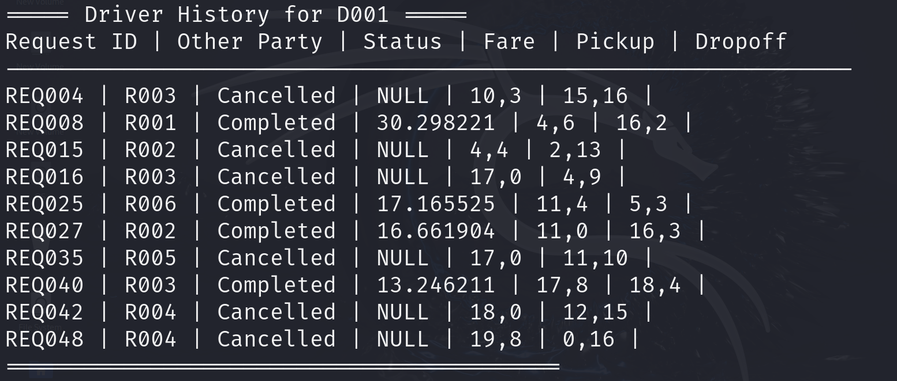
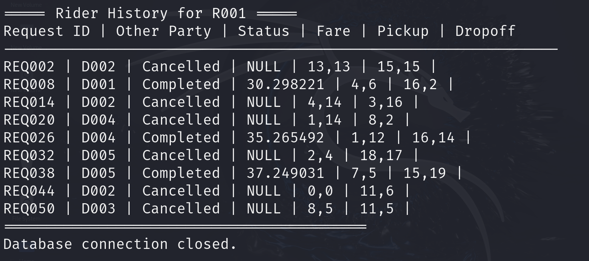
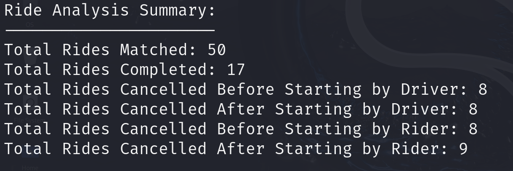

Smart Ride Management System - In Progress

The SmartRide Management System is a sophisticated, object-oriented software designed to optimize the operations of a ride-sharing platform. Built using C++, the system effectively manages drivers, riders, and rides with real-time updates and dynamic ride assignment. The project leverages robust modularity and integrates with a relational database (SQLite) to ensure persistent data storage and advanced querying capabilities. Its design is both scalable and efficient, meeting the demands of a modern ride-sharing environment.
Key features include seamless management of drivers and riders, allowing the addition, status updates, and location tracking of each entity. A dynamic ride-matching algorithm ensures that rides are assigned to the most suitable driver based on proximity and availability, improving response times and operational efficiency. The system also manages the entire ride lifecycle, tracking each ride from its initiation to completion or cancellation, while providing automated logging and error management. To enhance its functionality, the system includes features to fetch and display detailed ride histories for both drivers and riders. This functionality categorizes completed and canceled rides, highlighting key details such as the ride’s status, fare, and cancellation reasons, along with whether the driver or rider initiated the cancellation. Additionally, the project employs Perl scripting for automated data generation, creating realistic test cases for drivers, riders, and rides. A log analysis tool also enables detailed insights into ride outcomes, such as the number of rides completed, matched, or canceled.
This project is currently being extended to integrate seamlessly with cloud platforms like AWS, enabling deployment using services such as Amazon EC2 for backend hosting, AWS Lambda for event-driven automation, and RDS for scalable database management. These integrations are in progress to ensure the system’s adaptability for large-scale enterprise applications.
The SmartRide Management System demonstrates expertise in distributed systems, database management, algorithmic optimization, and cloud integration. It provides a strong foundation for real-world ride-sharing platforms while showcasing advanced technical and problem-solving skills. For the complete source code, implementation details, and documentation, visit the GitHub Repository.